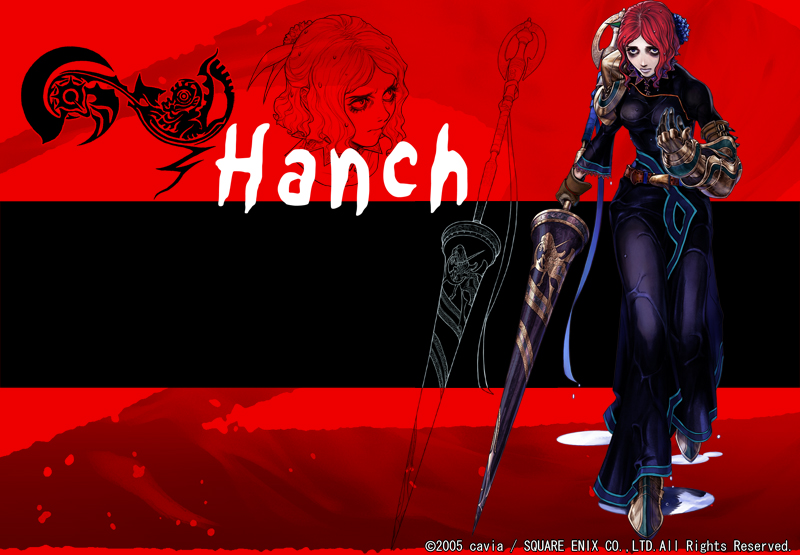

Hanch
Sex Female Age32 Height 165cm (cast.小島 幸子）
神水の直轄区連隊長。守護者。ケルピーと契約している。幼少の頃は「太陽の微笑み」と呼ばれるほどの愛らしい女の子だった。当然誰からも可愛がられ、その恩恵を当然と考えていた。
ある日、友人らと湖に出かけて船遊びを楽しんでいたところ、嵐が襲い死と隣り合わせになる。この際、ケルピーに契約を迫られた。契約を受け入れた彼女を待っていたのは、今までとまったく違う日々。
代償に「魅力」を支払ってしまった彼女に近づく人間は誰もいなくなった。おのずと性格も卑屈になっていき、ますます嫌われる要素を蓄えていく。契約者であることを買われて入団した封印騎士団でも、彼女をかまう者はいなかった。見え透いたおべっかを使ったところで誰も相手にしてくれな
い。唯一、“道具”を探していたジスモアが声をかけてやる。
以後、ハンチはジスモアに捨てられないよう必死である。オロー暗殺の片棒も喜んで担いだ。新封印制度により連隊長となっても、彼女の誰にでも媚びへつらう態度は変わらない。嫌われ具合も変わらない。同じ連隊長で、男でありながら妖しい魅力をぞんぶんにふるうヤハには嫉妬に似た感情を
覚えている。